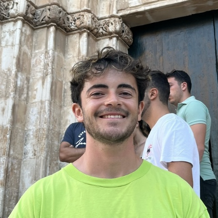

// PhD Student · AI Researcher · Engineer
Deciphering the cerebral bases of language with self-supervised learning. Building AI at the intersection of neuroscience and deep learning.
01 // about
I'm a PhD student at Université Paris Cité, investigating the cerebral bases of language using self-supervised learning. Trained as an engineer at École Polytechnique and with an MSc in Biomedical Engineering from Imperial College London, I work at the crossroads of AI, neuroscience, and signal processing.
Deep learning · Self-supervised learning · EEG & brain signals · Medical computer vision · Reinforcement learning · Computational neuroscience · Brain-machine interfaces
📧 juliengado.2001@gmail.com
📞 +33 6 03 57 43 62
📍 Paris, France
When I'm not training models, you'll find me on a soccer pitch, by the sea, or chasing powder on a ski slope.
02 // publications
Gadonneix, J., Zhang, M., Rapin, J., Evanson, L., Bourdillon, P., & King, J. R. (2026). Temporal structure of the language hierarchy within small cortical patches. arXiv preprint arXiv:2604.03021.
03 // education
04 // experience